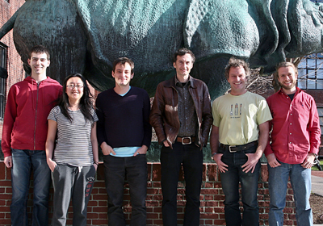
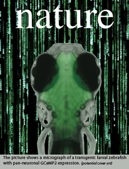

News Archives : 2012 : Fish in the Matrix: Motor Learning in a Virtual World
by Misha Ahrens, Florian Engert and Ruben Portugues
May 11, 2012

(L to R) Drew Robson, Jennifer Li, Ruben Portugues, Alexander Schier, Florian Engert, and Misha Ahrens
There are two fundamentally different forms of sensory information that are being processed by the brain. The form that is more commonly studied – also the form that neuroscientists mostly worry about - is the kind that tells the organism what is happening in the world. This is the neural activity that gets evoked by changes in the environment due to all possible kinds of physical or biological events. We live, after all, in a constantly changing world and it clearly helps to be informed speedily of these changes. A large part of neuroscience has to do with the study of how this sensory evoked activity is represented at different stages of processing in the brain and how it gets filtered for optimal extraction of the information that is most relevant for the generation of adaptive behaviors.
The story described in this week’s issue of Nature is not about this kind of question at all. Rather, it addresses the question of how the second form of sensory information gets processed, namely the kind of sensory activity that results from the motion of the animal itself. This stimulus is termed reafference and occurs virtually every time (and across many modalities) whenever any movement is executed. When walking forward we experience reverse optic flow, that is, the world moves in the opposite direction, we also experience pressure on the bottom of our feet and air might flow over our skin. Whenever we vocalize we experience a very distinct auditory reafference, namely the sound of our own voice which, of course, needs to get processed quite differently than somebody else’s utterance and clearly is a useful thing to pay attention to when we learn to sing or speak. I’m sure we can, with some creative thinking, even come up with good examples of olfactory reafference.
The main difference between this reafferent signal and the first from of sensory input, commonly known as the exafference, is that it doesn’t carry information of events that have occurred in the world. It rather informs the brain about the success and accuracy of ongoing movements. As such it is immensely useful and most likely central to all forms of motor learning and adaptation. The easiest way one can imagine this process to take place is that this reafference gets compared, somewhere in the brain, to an expected value, most conveniently represented by an efference copy, that is a copy of the motor-command that has been sent to the spinal cord and that is known to be available in many brain regions of many species.
It is clear that this phenomenon cannot be studied in anaesthetized animals since here the actual execution of a behavior is the origin and cause of neural input. If the goal is then to study the neural dynamics underlying these reafferent signals, a way has to be found that allows the monitoring of neural activity, ideally at cellular resolution and throughout the whole brain, while the animal is interactively navigating through an environment. An additional requirement for an experimental set-up that allows control over the reafferent signal is a decoupling of the motor action from the resulting sensory feedback. This is a feature that usually comes for free in all virtual environments where the speed and strength of the operator/subject can be dialed in at will.
The manuscript published in Nature describes experiments where we put larval zebrafish into such a virtual environment and change their fictive swim-power interactively to chase down the rather elusive neural correlates of these efference– reafference comparators. The fish’s small size and transparency greatly facilitates this endeavor since all its neurons are optically accessible by microscopy; and by expressing a genetically encoded calcium indicator, we were able to record activity throughout the whole brain and, importantly, during behavior. The classic virtual environment approach, well known to all users of flight simulators and all players of computer games, was taken one step further in this preparation by actually paralyzing the animal and recording activity in motor neurons as a proxy for tail beats and thus as a proxy for “intended locomotion”. This activity was translated readily by fast algorithms into intended movement and allowed the online update of a virtual environment that was represented by computer monitors surrounding the fish. This is quite reminiscent of the heroes in the movie “The Matrix” who interact with an entirely virtual world simply by virtue of activity in their brains, but it also has more tangible parallels in current attempts to develop brain machine interfaces that allow human subjects to move cursors over computer screens or operate simple machinery simply by thinking about it. We next asked, what happens in the brains of our fish as they adapt their behavior to different conditions of the virtual environment. By changing the “strength” of the virtual fish, we created simple scenarios where the fish suddenly found itself with much more – or much less - power than expected. Surprisingly, the paralyzed fish responded quite quickly to these imposed changes by adapting their behavior: a “weak” fish, for instance, sent more impulses to its neuromuscular junction to compensate for the decrease in strength of the visual feedback, whereas a “strong” fish did the opposite. Interestingly, the animals also “remembered” these changes in behavior for some time. Imaging everywhere in the brain of the fish, we managed to isolate several different types of neural activity that occurred during this behavior. Some neurons increased their activity when the fish swam harder, others when the fish swam more gently. Yet other groups, arguably the most interesting ones, were specifically active during the period where reafferent feedback was changed to render the animal unexpectedly weak or powerful. These “error” or “surprise” neurons are good candidates for the sites in the fish’s brain where an efference copy gets compared to the reafference. Anatomically, these neurons clustered in many different brain areas, including the cerebellum, an area known to be involved in motor control in mammals.
To summarize, this paper represents a first foray into the study of entire neural ensembles, spanning from sensory input all the way to motor output, in a behaving animal that’s flexibly adjusting its behavior in responses to changes in the feedback it receives from the environment; it thus opens the way for many similar experiments in which we can exhaustively study neural activity during behavior in a vertebrate model organism. We hope this will shed light on how large populations of neurons, across many brain areas, work together to generate flexible behavior.
Read more in Nature

[May 11, 2012]